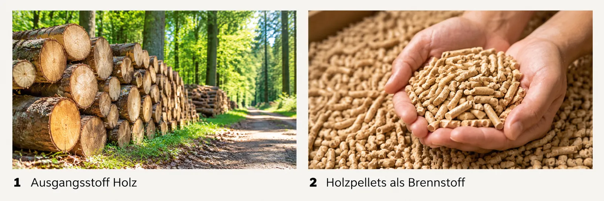
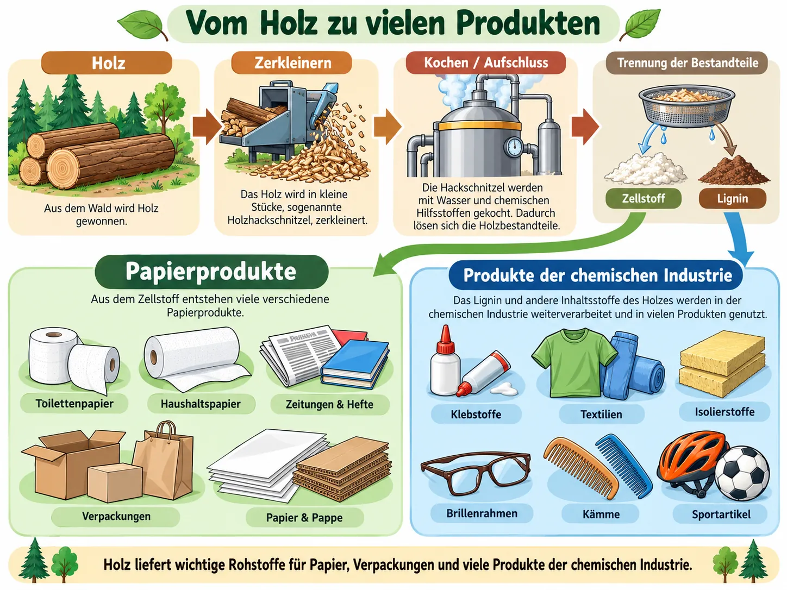

Kohlenstoff – der Baustein des Lebens
Pflanzen, Tiere und Menschen bestehen zu einem großen Teil aus . Stoffe, die von Lebewesen stammen, heißen deshalb . Nutzt man sie als Ausgangsmaterial, spricht man von organischen .
Es gibt zwei Gruppen: wie Holz und Raps wachsen immer wieder nach. wie Kohle, Erdöl und Erdgas sind vor Millionen Jahren aus abgestorbenen Lebewesen entstanden – sie wachsen nicht nach. Um sie geht es in den späteren Modulen.
Wie zeigt man, dass ein Stoff Kohlenstoff enthält? Man erhitzt ihn stark im Reagenzglas. Bleibt ein schwarzer Rest übrig, ist das Kohlenstoff. Man nennt das .
Material: Reagenzgläser, Stativ mit Klemme, Brenner, Schutzbrille, kleine Proben von Holzspänen, Zucker, Brot, Kochsalz und Sand.
Durchführung: Gib eine kleine Probe in ein trockenes Reagenzglas. Erhitze sie in der Brennerflamme stark, bis sich nichts mehr verändert. Beobachte die Farbe der Probe und den Rand des Glases.
⚠️ Den Versuch führt die Lehrkraft vor: Schutzbrille, gut lüften oder unter dem Abzug, Dämpfe nicht einatmen.
Probiere es in der Animation mit allen fünf Proben aus.
Wähle eine Probe und tippe auf „Erhitzen“.
MERKE
- Alle Lebewesen enthalten Kohlenstoffverbindungen.
- Stoffe von Lebewesen heißen organische Stoffe. Beim starken Erhitzen werden sie schwarz: Kohlenstoff bleibt übrig.
- Organische Rohstoffe sind entweder regenerativ (nachwachsend) oder fossil.
Organisch oder nicht? Nachwachsend oder fossil?
Tippe eine Karte an und dann das passende Feld. Du kannst die Karten auch ziehen.
Werte den Versuch aus ✨ KI prüft
Schreibe ganze Sätze oder Stichpunkte. Die KI achtet nur auf den Inhalt, nicht auf die Rechtschreibung. Danach kannst du die Musterlösung ansehen.
Holz – ein vielseitiger Rohstoff

Aus Holz baut man Häuser, Dachstühle und Möbel. Man kann es aber auch verheizen, zum Beispiel als . Die chemische Industrie gewinnt aus den Holzfasern außerdem (Cellulose). Aus diesem Grundstoff entstehen Papier und Pappe, aber auch Folien und Klebstoffe.
Was im Holz steckt. Ungefähr die Hälfte des Holzes ist Zellstoff, die andere Hälfte Holzstoff (). Zellstoff ist gefragt: Aus ihm macht man fast jede Papiersorte, vom weichen Taschentuch bis zum stabilen Karton. Auch Textilfasern, Isoliermaterialien und Klebstoffe lassen sich daraus herstellen.
Was wird alles aus Holz gemacht? ✨ KI prüft
Denk an dein Zimmer, deine Schule und den Supermarkt. Schreibe möglichst viele Dinge auf – auch solche, die man nicht sofort mit Holz verbindet.
Vom Holz zum Zellstoff
Bevor man Zellstoff nutzen kann, muss er vom Lignin getrennt werden. Im Zellstoffwerk wird das Holz dafür erst in kleine Stücke gehackt und dann in gekocht. Animation und Film zeigen dir, wie das abläuft.
Im Film zeigt die Fachagentur Nachwachsende Rohstoffe (FNR), wie in einem Zellstoffwerk aus Holz Papierprodukte werden. Der Film hält an einigen Stellen an. Beantworte dann die Frage unter dem Film – erst danach geht es weiter.
Beantworte die Frage unter dem Film.
Die Knöpfe mit ❓ springen direkt zu einem Film-Stopp.

MERKE
- Holz ist Baustoff, Brennstoff und Ausgangsstoff für viele Produkte.
- Holz besteht ungefähr je zur Hälfte aus Zellstoff (Cellulose) und Lignin (Holzstoff).
- Zellstoff gewinnt man, indem man Holz zerkleinert und in Lauge kocht. Dabei löst sich das Lignin, der Zellstoff bleibt übrig.
- Aus Zellstoff entstehen Papier und Pappe, Textilien, Isoliermaterialien und Klebstoffe.
Papierindustrie oder chemische Industrie?
Aus Zellstoff stellen zwei Industrien ganz verschiedene Dinge her. Ordne zu.
Vom Baum zum Toilettenpapier
Erkläre in eigenen Worten ✨ KI prüft
Raps – Öl aus den Samen
Im Frühling leuchten die Rapsfelder gelb. Raps ist eine , deren kleine schwarze Samen sehr viel Öl enthalten. Das Rapsöl kommt als Speiseöl in die Küche oder als in den Tank. Die chemische Industrie verwendet es als für Farben und Kunststoffe.
Wie aus den Samen in der Ölmühle Rapsöl und daraus Biodiesel wird, lernst du genauer in Modul 2.
Warum baut man Raps an? ✨ KI prüft
Wohin fließt das Rapsöl? Tippe unten auf die vier Verwendungen.
Aus Holz oder aus Raps?
Tippe eine Karte an und dann das passende Feld.
Regenerative Rohstoffe und ihre Merkmale
Nachwachsend. Für einen gefällten Baum pflanzt man einen neuen, ein abgeerntetes Rapsfeld wird im nächsten Jahr wieder eingesät. Holz und Raps sind deshalb regenerative (nachwachsende) Rohstoffe.
Gemeint sind Erzeugnisse der und der , die man nicht isst und nicht an Tiere verfüttert. Man nutzt sie als Material () oder verbrennt sie für Wärme, Strom und Kraftstoffe ().
Merkmale. Solange man nachpflanzt, gehen regenerative Rohstoffe im Prinzip nie aus, und man kann sie fast überall auf der Welt anbauen. Dem Kohlenstoffkreislauf schaden sie nicht: Beim Wachsen nehmen die Pflanzen durch sogar CO₂ aus der Luft auf.
Oft werden sie nicht weit vom Feld oder Wald verarbeitet und genutzt. Das spart lange Transporte und schafft Arbeitsplätze in der Region. Darum setzt man sie in immer mehr Bereichen ein.
MERKE
- Holz lässt sich vielseitig nutzen: als Baustoff, als Brennstoff und als Grundstoff.
- Rapssamen liefern Öl – für Biokraftstoffe und als Grundstoff für die chemische Industrie.
- Regenerative Rohstoffe stammen aus Land- und Forstwirtschaft. Weil sie immer wieder nachwachsen, sind sie im Prinzip unbegrenzt vorhanden.
- Regenerative Rohstoffe sind CO₂-neutral: Beim Wachsen binden die Pflanzen so viel CO₂, wie später wieder frei wird.
Was sind regenerative Rohstoffe? Fülle die Lücken.
Tippe zuerst auf eine Lücke, dann auf das passende Wort.
Welche Merkmale passen nicht? Streiche sie durch.
Tippe ein Merkmal an, um es durchzustreichen. Tippst du noch einmal, ist der Strich wieder weg.
Ergänze ein weiteres Merkmal ✨ KI prüft
Stofflich, energetisch – oder gar kein Rohstoff?
Regenerative Rohstoffe kann man stofflich oder energetisch nutzen. Als Nahrungs- oder Futtermittel zählen Pflanzen nicht zu den nachwachsenden Rohstoffen.
Erkläre in eigenen Worten ✨ KI prüft
Training für die Probe
Löse das Kreuzworträtsel
Tippe in ein Kästchen und schreibe. Tippst du ein Kästchen zweimal an, wechselt die Richtung. Ä und Ö bekommen ein eigenes Kästchen.
Vom Holz zu vielen Produkten
Kreuze an
Erkläre in eigenen Worten ✨ KI prüft
Schreibe ganze Sätze oder Stichpunkte. Die KI achtet nur auf den Inhalt, nicht auf die Rechtschreibung. Danach kannst du die Musterlösung ansehen.
Rohstoff-Profi-Check
Wortspeicher
Alle Fachbegriffe dieses Moduls auf einen Blick.
Wie geht es weiter?
In Modul 2 geht es mit dem Raps weiter: Wie wird aus Rapsöl Biodiesel? Außerdem lernst du Stärke als Rohstoff kennen und prüfst, wann regenerative Rohstoffe wirklich nachhaltig sind.